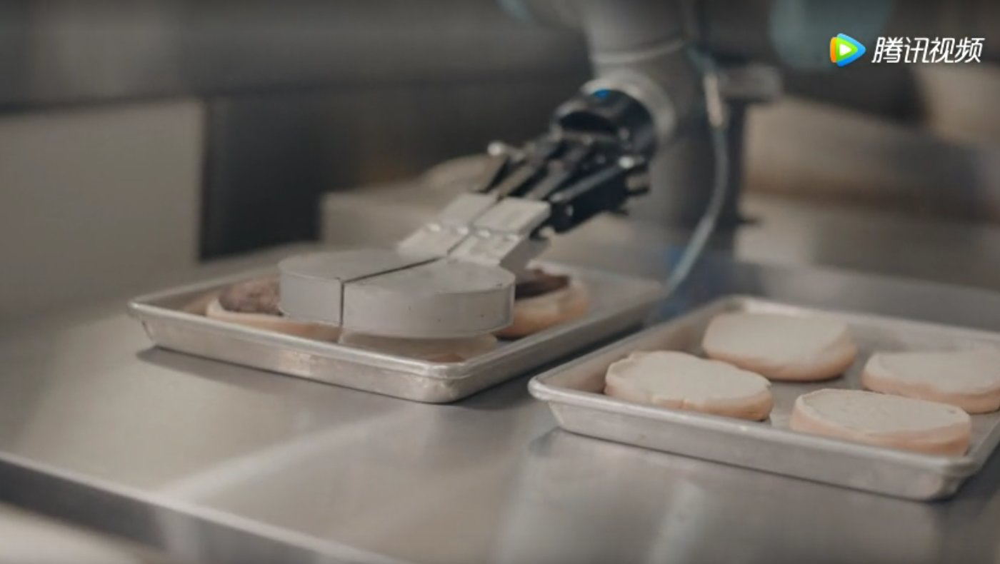

时间：2019-10-23
长久以来，我们人类都有一个愿望——那就是希望机器人能像保姆一样照料我们的饮食起居，并且比保姆更让人放心，更加能干，扎克伯格也曾公开表示希望能有一个机器人来照顾他的小女儿。
实际上烹饪机器人这个愿望从技术上来说已经较为成熟，近期在央视《机智过人》栏目组亮相的七轴双臂协作式机器人“多可”就向我们展示了这类技术，它能够独自调制鸡尾酒，并且在速度与技巧上战胜了该项吉尼斯世界纪录保持者的人类。
它拥有双目视觉，能够自主判断目标并进行操作；七轴机械臂使它能做到和人类一样的动作，并能够在不移动末端的情况下避开障碍。可以说在双手协作这类活动中，机器人“多可”已经达到人类同一或更高水平，“多可”有何不同？机器人管家进入我们的生活还有哪些问题与发展趋势呢？
（图为：双臂协作机器人“多可”）
双臂协作机器人的面世，让机器人管家加速向我们生活走来
我们知道现在的制造领域已经应用了很多的工业机器人，但这些机器人大多是单臂的，并且只有三轴或四轴，它们只能根据程序执行特定环境下的特定动作，因为它们不具备感知能力，所以只能用栏杆将其和人类分开工作。但双臂协作机器人“多可”不一样，它能够与人类在同一环境中进行安全灵活的交互，这让我们看到了新的可能。
总的来说，“多可”是基于三项技术：冗余机械臂、力检测与力反馈技术和双目视觉技术去实现的。
1、冗余机械臂使其拥有极高的灵活度。
传统机械臂大多是六轴的，但它有七轴，能够完成七个自由度的运动，所以称为冗余机械臂，但这一轴并不是白白多出来没用的。中科新松有限公司副总裁杨跞认为：理论上来说，六轴机械臂可达所有点，但是冗余机械臂可以使其绕开一些障碍完成更复杂的运动，并且在到达目标点之后，在操作上第七轴更能够获得极大的灵活度。
2、力检测与力反馈技术保障了安全。
它机械臂中植入了双重保险的力检测，这使机器人自身不会用力过大的同时，还让人类能够使它在任何位置下停止运动。不仅如此，杨跞还说：“多可”还带来了一种机器人示教方式的变革，传统方式教给机器人新一个动作需要进行编程；而现在则可以手把手来教它，在模拟状态下，用外力推动其机械臂进行运动，然后它自己就会记录这个运动轨迹，并且能够重新完成同一动作，这种方式也是力检测与力反馈技术所带来的另一个好处。
3、双目视觉使其能适用多种环境。
它使用的可动双目视觉技术拥有6个自由度，视野范围达到660mm╳550mm。除了能够感知人类保障安全之外，更重要的作用是识别目标、确定目标的三维结构、感知目标的距离，这使其拥有了判断能力，比如在调制鸡尾酒时，它能够鉴别不同的料酒并以此来选择倒入的顺序。其能够根据特定目标采取特定行动，从而可以完成不同任务，适应多种场景。
协作机器人初创公司越疆科技的创始人兼CEO刘培超也持有同样的看法，他认为机械臂类型的机器人产品，如今在技术操作难度和轻巧度方面，已经有能力和机会在消费级市场大展拳脚。这是不是意味着机器人管家很快就能走进千家万户？
比预想的来得晚一点，机器人管家还在等什么
不过有人会问，按理说技术已经较为成熟，但为什么在我们现实生活中还没有大规模应用呢？事实上，虽说双臂机器人在制造领域早已广泛应用，但消费市场的不成熟与机器人的智能化水平较低使它们还难以大规模应用于个人生活，机器人管家还需要等待两个条件的成熟。
1、市场的成熟，个人消费者的需求暂未唤醒与成本过高使得这个市场成熟还需一段时间。
有人说机器人管家就是一个伪需求，因为我们能自己做的事为什么非要让机器人来做呢？
这的确是需求未唤醒的体现，但这需求是存在的，这是一种懒人经济，就拿扫地机器人来说，人类当然也会扫地，但根据GFK的数据显示：扫地机器人市场有超两位数的增长，2015年中国扫地机器人市场零售规模在50亿元人民币左右，2017年将达到75亿元人民币，2018年则将增长至120亿元人民币。随着生活水平的提高，人们越来越不愿意在琐事上浪费时间，能够帮你做饭的机器人当然也会有这个机会。但现在市场对此并没有多少反应，一方面是因为厂商的机器人成本较高，这类产品还没有进入消费者的视野；另一方面是现在的工业机器人市场也在快速增长中，传统机器人制造厂商还没有进入消费者市场的兴趣，只有一些家电厂商在苦苦探索。
2、机器人自身“本领”的成熟，目前编程式的作业模式限制了机器人的智能化水平。
正如从事智能机器人与机械臂型机器人研究多年的美国南佛罗里达大学计算机与工程学院教授孙宇认为：早期协作机器人的研究偏向于专门解决工业领域某一具体的需求，而后又专注于机械臂抓手本身的研究。这使其因延续于工业生产的重复性作业的要求，作业程序与交互方式都是以编程来实现的，虽说编程能够实现各种步骤化动作，但这还是极大的限制了它的智能性与通用性。是否能够满足各种菜肴的非同一性步骤，包容炒菜之外的洗、切、装盘等一系类操作，使其达到能够完全接管厨房的智能与通用水平成为了极大的考验；并且在交互方式上面也也不方便，如果使用语音交互或者物联网交互等交互技术，形成完整的交互系统，减小难度，才能让消费者的使用门槛进一步降低。同时孙宇也提到：进入21世纪后，研究人员整合人工智能，提高作业精度和自动化水平，开始进一步分解协作机器人的任务，满足各种社会需求，使其有了进入家庭服务的可能。
好消息接踵而至，机器人管家真的快要来了
虽然机器人管家还在等待好时间，但我们也不用过度悲观，因为现在已经显现了一些继续发展的趋势。刘培超提到，在美国双臂协作机器人已经成为家庭生活的创造工具，协同激光雕刻、3D打印一起满足创作需求，也已经作为家庭烹饪的协作助手，帮助家庭生活变得更加自动化，尤其是双臂协作机器人在消费市场上会有良好的销售与应用前景。
1、在全球服务机器人市场快速增长的趋势下，中国服务机器人行业也迎来了战略发展期。
根据IFR的数据，2014年服务机器人的销量为470万台，并预计到2018年全球服务机器人市场销量将达3490万台，且在服务机器人的销量中，有70.2%来源于家政服务机器人。且国内家电厂商已经开始布局，九阳、美的也都推出了能够自动烹饪的机器，虽然暂时只能实现简单地翻炒，在物料方面还要人工进行大量的准备，但这也不失为一个信号。且不同于扫地机器人市场的红海竞争，家庭烹饪机器人还是一个较为空白的市场，若能成功拉动消费者需求，这也会成为一个上百亿的庞大市场。
2、机器人将与人工智能技术融合，将大力提高机器人的智能化水平。
2017年，工信部发布的《促进新一代人工智能产业发展三年行动计划》指出，要提升家庭服务机器人的智能化水平，并明确到2020年，智能服务机器人将在环境感知、自然交互、自主学习、人机协作等关键技术取得突破；实现智能家庭服务机器人、智能公共服务机器人批量生产及应用的目标。并且早在2016年知名服务机器人企业科沃斯与国家级众创空间孵化器蒲公英就联合成立的孵化加速平台——科沃斯蒲公英孵化加速器，这一孵化平台就旨在专注于机器人与人工智能垂直创业项目的培育。
在企业方面，也体现出了这种趋势，并且在2017年就有了已经实现落地的应用，美国的Miso Robotics 和 Cali Group 两家公司共同合作，开发了一款名叫Flippy的双臂协作机器人，他能够帮助工作人员制作出完美的汉堡，并已经在美国加利福尼亚州帕萨迪纳的一家 CaliBurger 餐厅工作。
Flippy应用了深度学习技术，除了能够简单地翻转食物以外，还能学习调制配料、掌控烹饪的时间和温度的高低，更为重要的是，它能够像自动驾驶一样，从各种突发情况中总结经验并制定出解决方案，从而渐渐地满足更多的要求。

（图为：双臂协作机器人“多可”）
双臂协作机器人的面世，让机器人管家加速向我们生活走来
我们知道现在的制造领域已经应用了很多的工业机器人，但这些机器人大多是单臂的，并且只有三轴或四轴，它们只能根据程序执行特定环境下的特定动作，因为它们不具备感知能力，所以只能用栏杆将其和人类分开工作。但双臂协作机器人“多可”不一样，它能够与人类在同一环境中进行安全灵活的交互，这让我们看到了新的可能。
总的来说，“多可”是基于三项技术：冗余机械臂、力检测与力反馈技术和双目视觉技术去实现的。
1、冗余机械臂使其拥有极高的灵活度。传统机械臂大多是六轴的，但它有七轴，能够完成七个自由度的运动，所以称为冗余机械臂，但这一轴并不是白白多出来没用的。中科新松有限公司副总裁杨跞认为：
理论上来说，六轴机械臂可达所有点，但是冗余机械臂可以使其绕开一些障碍完成更复杂的运动，并且在到达目标点之后，在操作上第七轴更能够获得极大的灵活度。
2、力检测与力反馈技术保障了安全。它机械臂中植入了双重保险的力检测，这使机器人自身不会用力过大的同时，还让人类能够使它在任何位置下停止运动。不仅如此，杨跞还说：“多可”还带来了一种机器人示教方式的变革，传统方式教给机器人新一个动作需要进行编程；而现在则可以手把手来教它，在模拟状态下，用外力推动其机械臂进行运动，然后它自己就会记录这个运动轨迹，并且能够重新完成同一动作，这种方式也是力检测与力反馈技术所带来的另一个好处。
3、双目视觉使其能适用多种环境。它使用的可动双目视觉技术拥有6个自由度，视野范围达到660mm╳550mm。除了能够感知人类保障安全之外，更重要的作用是识别目标、确定目标的三维结构、感知目标的距离，这使其拥有了判断能力，比如在调制鸡尾酒时，它能够鉴别不同的料酒并以此来选择倒入的顺序。其能够根据特定目标采取特定行动，从而可以完成不同任务，适应多种场景。
协作机器人初创公司越疆科技的创始人兼CEO刘培超也持有同样的看法，他认为机械臂类型的机器人产品，如今在技术操作难度和轻巧度方面，已经有能力和机会在消费级市场大展拳脚。这是不是意味着机器人管家很快就能走进千家万户？
比预想的来得晚一点，机器人管家还在等什么
不过有人会问，按理说技术已经较为成熟，但为什么在我们现实生活中还没有大规模应用呢？
事实上，虽说双臂机器人在制造领域早已广泛应用，但消费市场的不成熟与机器人的智能化水平较低使它们还难以大规模应用于个人生活，机器人管家还需要等待两个条件的成熟。
1、市场的成熟，个人消费者的需求暂未唤醒与成本过高使得这个市场成熟还需一段时间。有人说机器人管家就是一个伪需求，因为我们能自己做的事为什么非要让机器人来做呢？
这的确是需求未唤醒的体现，但这需求是存在的，这是一种懒人经济，就拿扫地机器人来说，人类当然也会扫地，但根据GFK的数据显示：扫地机器人市场有超两位数的增长，2015年中国扫地机器人市场零售规模在50亿元人民币左右，2017年将达到75亿元人民币，2018年则将增长至120亿元人民币。
随着生活水平的提高，人们越来越不愿意在琐事上浪费时间，能够帮你做饭的机器人当然也会有这个机会。但现在市场对此并没有多少反应，一方面是因为厂商的机器人成本较高，这类产品还没有进入消费者的视野；另一方面是现在的工业机器人市场也在快速增长中，传统机器人制造厂商还没有进入消费者市场的兴趣，只有一些家电厂商在苦苦探索。
2、机器人自身“本领”的成熟，目前编程式的作业模式限制了机器人的智能化水平。正如从事智能机器人与机械臂型机器人研究多年的美国南佛罗里达大学计算机与工程学院教授孙宇认为：早期协作机器人的研究偏向于专门解决工业领域某一具体的需求，而后又专注于机械臂抓手本身的研究。
这使其因延续于工业生产的重复性作业的要求，作业程序与交互方式都是以编程来实现的，虽说编程能够实现各种步骤化动作，但这还是极大的限制了它的智能性与通用性。
是否能够满足各种菜肴的非同一性步骤，包容炒菜之外的洗、切、装盘等一系类操作，使其达到能够完全接管厨房的智能与通用水平成为了极大的考验；并且在交互方式上面也也不方便，如果使用语音交互或者物联网交互等交互技术，形成完整的交互系统，减小难度，才能让消费者的使用门槛进一步降低。
同时孙宇也提到：进入21世纪后，研究人员整合人工智能，提高作业精度和自动化水平，开始进一步分解协作机器人的任务，满足各种社会需求，使其有了进入家庭服务的可能。
好消息接踵而至，机器人管家真的快要来了
虽然机器人管家还在等待好时间，但我们也不用过度悲观，因为现在已经显现了一些继续发展的趋势。刘培超提到，在美国双臂协作机器人已经成为家庭生活的创造工具，协同激光雕刻、3D打印一起满足创作需求，也已经作为家庭烹饪的协作助手，帮助家庭生活变得更加自动化，尤其是双臂协作机器人在消费市场上会有良好的销售与应用前景。
1、在全球服务机器人市场快速增长的趋势下，中国服务机器人行业也迎来了战略发展期。
根据IFR的数据，2014年服务机器人的销量为470万台，并预计到2018年全球服务机器人市场销量将达3490万台，且在服务机器人的销量中，有70.2%来源于家政服务机器人。且国内家电厂商已经开始布局，九阳、美的也都推出了能够自动烹饪的机器，虽然暂时只能实现简单地翻炒，在物料方面还要人工进行大量的准备，但这也不失为一个信号。且不同于扫地机器人市场的红海竞争，家庭烹饪机器人还是一个较为空白的市场，若能成功拉动消费者需求，这也会成为一个上百亿的庞大市场。
2、机器人将与人工智能技术融合，将大力提高机器人的智能化水平。
2017年，工信部发布的《促进新一代人工智能产业发展三年行动计划》指出，要提升家庭服务机器人的智能化水平，并明确到2020年，智能服务机器人将在环境感知、自然交互、自主学习、人机协作等关键技术取得突破；实现智能家庭服务机器人、智能公共服务机器人批量生产及应用的目标。并且早在2016年知名服务机器人企业科沃斯与国家级众创空间孵化器蒲公英就联合成立的孵化加速平台——科沃斯蒲公英孵化加速器，这一孵化平台就旨在专注于机器人与人工智能垂直创业项目的培育。
在企业方面，也体现出了这种趋势，并且在2017年就有了已经实现落地的应用，美国的Miso Robotics 和 Cali Group 两家公司共同合作，开发了一款名叫Flippy的双臂协作机器人，他能够帮助工作人员制作出完美的汉堡，并已经在美国加利福尼亚州帕萨迪纳的一家 CaliBurger 餐厅工作。
Flippy应用了深度学习技术，除了能够简单地翻转食物以外，还能学习调制配料、掌控烹饪的时间和温度的高低，更为重要的是，它能够像自动驾驶一样，从各种突发情况中总结经验并制定出解决方案，从而渐渐地满足更多的要求。